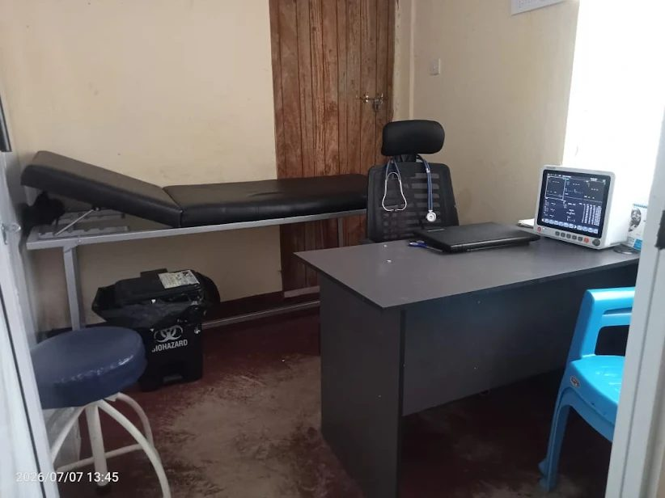

Complete primary healthcare under one roof.
Consultation, lab tests and maternity services, plus family planning, minor surgery and home-based care for Ramisi Ward.
Six core services
Everything listed on our clinic signboard, explained.
Outpatient services
Clinical examination, diagnosis, prescriptions and treatment of acute and common illnesses for every age group.
Family planning
Counselling and family planning services for individuals and couples.
Minor surgery and suturing
Wound care, suturing and minor surgical procedures in a sterile setting.
Home-based care
Nurse visits for wound dressing, catheter changes and chronic illness monitoring. How it works.

Hypertension and chronic care clinic
Long-term conditions need steady follow-up.
- Regular blood pressure and vitals tracking
- Medication review and management
- Lifestyle counselling tailored to you
Paying for your care
We accept cash and M-Pesa. Our SHA empanelment is in progress, so please message us to check the latest status before your visit.
Need care? We are in Ramisi Ward.
Open Monday to Saturday, 8 AM to 6 PM. For a life-threatening emergency go to the nearest hospital.